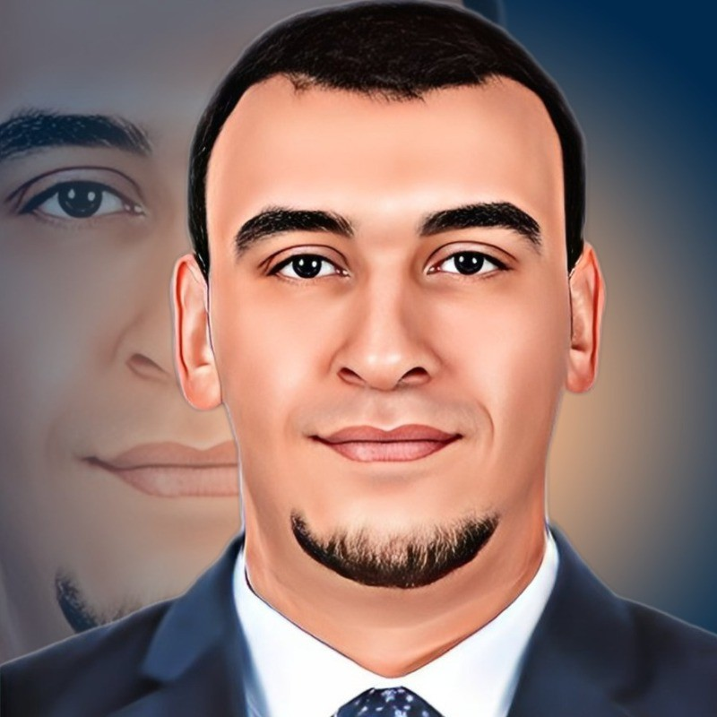

Mentor: Mohamed Sweelam
Program Overview
Welcome to the "To-Be-Software-Engineer" mentorship program. This comprehensive program is designed to equip you with the skills and knowledge necessary to become a successful software engineer.
Program Modules
- Mindmap of Backend Engineer: A detailed mindmap to visualize the core concepts and skills required for a backend engineer.
- Setting Objectives for Joiners: Defining clear career path objectives for new joiners to help them navigate their journey in software engineering.
- Introduction to Software Development Life Cycle: An in-depth introduction to the stages of the software development life cycle and their importance.
- Understanding Clean Code: Principles and practices to write clean, maintainable, and efficient code.
- Building Scalable Systems: Techniques and strategies to build systems that can handle increased loads effectively.
- Understanding Messaging Systems: Insights into various messaging systems and how to utilize them for effective communication in distributed systems.
- Crafting Database Performance Enhancement: Strategies to enhance database performance for faster and more reliable applications.
- System Design Turse Snapshot: A concise overview of system design principles and best practices.
- Mock Interviews: Practical mock interview sessions to prepare you for real-world technical interviews.
- Final Session on Soft Skills: A final session focusing on the essential soft skills required to succeed in a professional environment.